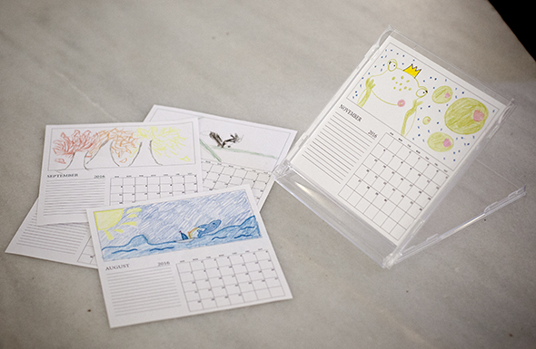

Solo necesitas una caja de CD y este PDF.
- Abre la caja y quita la pieza de plástico que sujeta el CD.
- Da la vuelta a la tapa delantera y vuelve a encajarla en su sitio (ya no se podrá cerrar).
- Pinta las hojas impresas y córtalas al tamaño marcado.
Listo: un calendario perfecto para el escritorio. Creo que es un gran regalo de Navidad, pero en verano los niños tienen mucho más tiempo :-)
